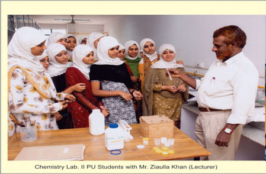
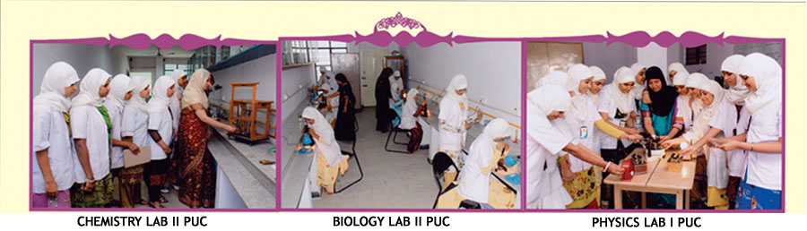

Home / Facilities
Science Laboratories
Science laboratories of the Pre University College for Girls, and laboratory photographs from the Banikuppa campus.
PU College for Girls
The college is housed in a spacious building with well furnished and ventilated class rooms, well equipped laboratories and library with good collection of books. Magazines and News papers are also subscribed for the benefit of the students. The computer lab is provided with internet facility. A spacious auditorium is also under construction. We aim to provide canteen facility for our students. A nationalized bank (Canara Bank) is also located in the same building.

Chemistry Lab, II PU students with Mr. Ziaulla Khan (Lecturer) 
Chemistry Lab II PUC · Biology Lab II PUC · Physics Lab I PUC
Laboratory photographs
Practical work in the science laboratories of the Banikuppa residential campus.

Chemistry laboratoryBanikuppa residential campus 
Physics laboratoryBanikuppa residential campus 
Biology laboratoryBanikuppa residential campus
The English Boys High School’s Laboratories page describes these Banikuppa photographs as students conducting experiments under the guidance of subject teachers (chemistry), exhibiting an experiment to a guest from U.S.A. (physics) and conducting practicals using natural specimens (biology). More on the Banikuppa Science Laboratories page.